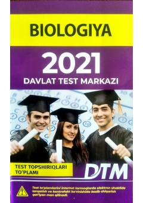

B2Biologiya fanidan 2021-yilgi test topshiriqlari to'plami.
Ushbu to'plam biologiya fanidan 2021-yilgi test topshiriqlarini o'z ichiga olib, abituriyentlar va o'quvchilarga imtihonlarga tayyorgarlik ko'rish uchun mo'ljallangan. Kitobda biologik tizimlar, hujayra darajasidagi jarayonlar va ilmiy tadqiqot usullariga oid test savollari berilgan.